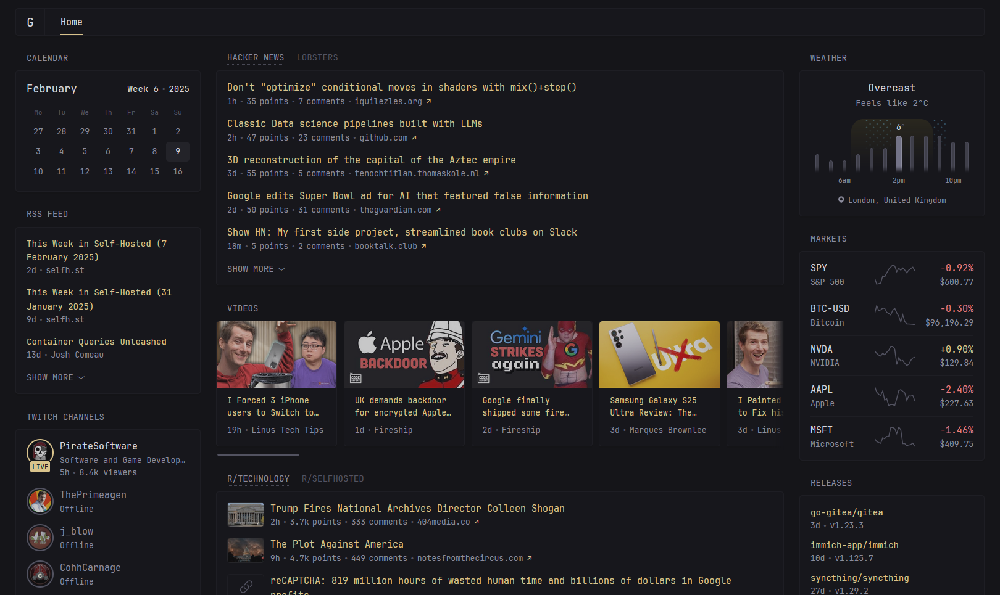

Configuring Glance
Preconfigured page
If you don't want to spend time reading through all the available configuration options and just want something to get you going quickly you can use this glance.yml file and make changes to it as you see fit. It will give you a page that looks like the following:

Configure the widgets, add more of them, add extra pages, etc. Make it your own!
The config file
Auto reload
Automatic config reload is supported, meaning that you can make changes to the config file and have them take effect on save without having to restart the container/service. Making changes to environment variables does not trigger a reload and requires manual restart. Deleting a config file will stop that file from being watched, even if it is recreated.
[!NOTE]
If you attempt to start Glance with an invalid config it will exit with an error outright. If you successfully started Glance with a valid config and then made changes to it which result in an error, you'll see that error in the console and Glance will continue to run with the old configuration. You can then continue to make changes and when there are no errors the new configuration will be loaded.
[!CAUTION]
Reloading the configuration file clears your cached data, meaning that you have to request the data anew each time you do this. This can lead to rate limiting for some APIs if you do it too frequently. Having a cache that persists between reloads will be added in the future.
Environment variables
Inserting environment variables is supported anywhere in the config. This is done via the ${ENV_VAR} syntax. Attempting to use an environment variable that doesn't exist will result in an error and Glance will either not start or load your new config on save. Example:
server:
host: ${HOST}
port: ${PORT}
Can also be in the middle of a string:
- type: rss
title: ${RSS_TITLE}
feeds:
- url: http://domain.com/rss/${RSS_CATEGORY}.xml
Works with any type of value, not just strings:
- type: rss
limit: ${RSS_LIMIT}
If you need to use the syntax ${NAME} in your config without it being interpreted as an environment variable, you can escape it by prefixing with a backslash \:
something: \${NOT_AN_ENV_VAR}
Other ways of providing tokens/passwords/secrets
You can use Docker secrets with the following syntax:
# This will be replaced with the contents of the file /run/secrets/github_token
# so long as the secret `github_token` is provided to the container
token: ${secret:github_token}
Alternatively, you can load the contents of a file who's path is provided by an environment variable:
docker-compose.yml
services:
glance:
image: glanceapp/glance
environment:
- TOKEN_FILE=/home/user/token
volumes:
- /home/user/token:/home/user/token
glance.yml
token: ${readFileFromEnv:TOKEN_FILE}
[!NOTE]
The contents of the file will be stripped of any leading/trailing whitespace before being used.
Including other config files
Including config files from within your main config file is supported. This is done via the $include directive along with a relative or absolute path to the file you want to include. If the path is relative, it will be relative to the main config file. Additionally, environment variables can be used within included files, and changes to the included files will trigger an automatic reload. Example:
pages:
- $include: home.yml
- $include: videos.yml
- $include: homelab.yml
The file you are including should not have any additional indentation, its values should be at the top level and the appropriate amount of indentation will be added automatically depending on where the file is included. Example:
glance.yml
pages:
- name: Home
columns:
- size: full
widgets:
$include: rss.yml
- name: News
columns:
- size: full
widgets:
- type: group
widgets:
$include: rss.yml
- type: reddit
subreddit: news
rss.yml
- type: rss
title: News
feeds:
- url: ${RSS_URL}
The $include directive can be used anywhere in the config file, not just in the pages property, however it must be on its own line and have the appropriate indentation.
If you encounter YAML parsing errors when using the $include directive, the reported line numbers will likely be incorrect. This is because the inclusion of files is done before the YAML is parsed, as YAML itself does not support file inclusion. To help with debugging in cases like this, you can use the config:print command and pipe it into less -N to see the full config file with includes resolved and line numbers added:
glance --config /path/to/glance.yml config:print | less -N
This is a bit more convoluted when running Glance inside a Docker container:
docker run --rm -v ./glance.yml:/app/config/glance.yml glanceapp/glance config:print | less -N
This assumes that the config you want to print is in your current working directory and is named glance.yml.
Icons
For widgets which provide you with the ability to specify icons such as the monitor, bookmarks, docker containers, etc, you can use the icon property to specify a URL to an image or use icon names from multiple libraries via prefixes:
icon: si:immich # si for Simple icons https://simpleicons.org/
icon: sh:immich # sh for selfh.st icons https://selfh.st/icons/
icon: di:immich # di for Dashboard icons https://github.com/homarr-labs/dashboard-icons
icon: mdi:camera # mdi for Material Design icons https://pictogrammers.com/library/mdi/
[!NOTE]
The icons are loaded externally and are hosted on
cdn.jsdelivr.net, if you do not wish to depend on a 3rd party you are free to download the icons individually and host them locally.
Icons from the Simple icons library as well as Material Design icons will automatically invert their color to match your light or dark theme, however you may want to enable this manually for other icons. To do this, you can use the auto-invert prefix:
icon: auto-invert https://example.com/path/to/icon.png # with a URL
icon: auto-invert sh:glance-dark # with a selfh.st icon
This expects the icon to be black and will automatically invert it to white when using a dark theme.
Config schema
For property descriptions, validation and autocompletion of the config within your IDE, @not-first has kindly created a schema. Massive thanks to them for this, go check it out and give them a star!
Authentication
To make sure that only you and the people you want to share your dashboard with have access to it, you can set up authentication via username and password. This is done through a top level auth property. Example:
auth:
secret-key: # this must be set to a random value generated using the secret:make CLI command
users:
admin:
password: 123456
svilen:
password: 123456
To generate a secret key, run the following command:
./glance secret:make
Or with Docker:
docker run --rm glanceapp/glance secret:make
Using hashed passwords
If you do not want to store plain passwords in your config file or in environment variables, you can hash your password and provide its hash instead:
./glance password:hash mysecretpassword
Or with Docker:
docker run --rm glanceapp/glance password:hash mysecretpassword
Then, in your config file use the password-hash property instead of password:
auth:
secret-key: # this must be set to a random value generated using the secret:make CLI command
users:
admin:
password-hash: $2a$10$o6SXqiccI3DDP2dN4ADumuOeIHET6Q4bUMYZD6rT2Aqt6XQ3DyO.6
Preventing brute-force attacks
Glance will automatically block IP addresses of users who fail to authenticate 5 times in a row in the span of 5 minutes. In order for this feature to work correctly, Glance must know the real IP address of requests. If you're using a reverse proxy such as nginx, Traefik, NPM, etc, you must set the proxied property in the server configuration to true:
server:
proxied: true
When set to true, Glance will use the X-Forwarded-For header to determine the original IP address of the request, so make sure that your reverse proxy is correctly configured to send that header.